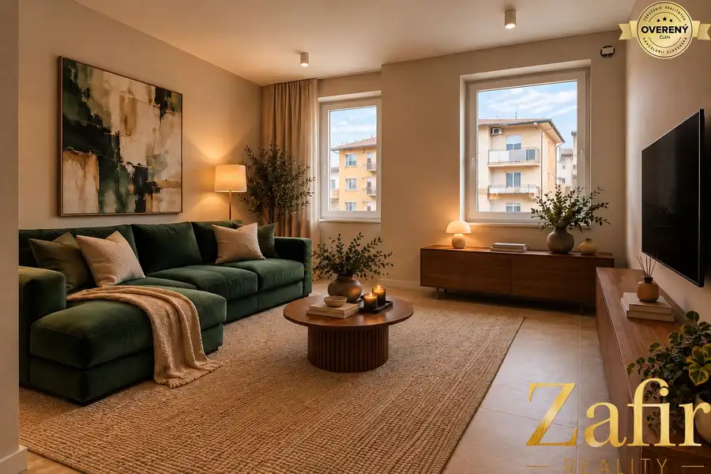

5i RD s bytovou jednotkou pod Smolenickým zámkom !! Znížená cena!!
Smolenice
- Dispozícia5-izbový
- Plocha116 m²
- Poschodie0. z 2
- Stavčiastočne prerobený
O nehnuteľnosti
NOVÁ CENA: 289 000EUR
EXKLUZÍVNE | Rodinný dom pod Smolenickým zámkom s veľkorysým pozemkom, krásnymi výhľadmi a samostatnou bytovou jednotkou
Predstavte si bývanie, kde máte dostatok priestoru pre celú rodinu, veľkú záhradu, súkromie, krásny výhľad na Smolenický zámok a zároveň možnosť využiť samostatnú bytovú jednotku podľa vlastných potrieb.
V zastúpení majiteľa ponúkame na predaj 5-izbový rodinný dom v obci Smolenice, situovaný na veľkorysom pozemku s výmerou 1 278 m². Nehnuteľnosť zaujme nielen svojou polohou pod Smolenickým zámkom a výhľadmi na okolitú prírodu Malých Karpát, ale predovšetkým svojou variabilitou.
Veľkou pridanou hodnotou je samostatná 1-izbová bytová jednotka s vlastným zázemím a samostatnou terasou. Tá môže slúžiť ako bývanie pre rodičov či dospelé dieťa, priestor pre hostí, kancelária alebo ako samostatná jednotka na prenájom.
ZÁKLADNÉ ÚDAJE
-5-izbový rodinný dom
-samostatná 1-izbová bytová jednotka
-podlahová plocha domu: 156,30 m²
-zastavaná plocha: 116 m²
-výmera pozemku: 1 278 m²
-dvojpodlažný rodinný dom s podkrovím
-čiastočne podpivničený
-kolaudácia: 1998
-zariadený
-krásne výhľady na Smolenický zámok a Malé Karpaty
-z jednej strany bez priameho suseda
-samostatný vstup do suterénu zo záhrady
DISPOZÍCIA RODINNÉHO DOMU :
PRÍZEMIE
Denná časť domu ponúka príjemný priestor pre každodenný rodinný život a pozostáva z:
-priestrannej obývacej izby s výstupom na zastrešenú terasu
-jedálne s krbom
-kuchyne
-chodby
-samostatného WC
-vstupu do pivnice
-Obývacia izba je prepojená so zastrešenou terasou orientovanou do záhrady. Terasa je ideálnym miestom na rannú kávu, rodinné posedenia, grilovanie alebo oddych počas letných dní.
POSCHODIE :
Nočná časť domu ponúka dostatok priestoru pre rodinné bývanie a pozostáva zo:
-4 samostatných izieb
-kúpeľne s WC
-Zo spální a kuchyne si môžete vychutnávať príjemné výhľady na Smolenický zámok a okolitú prírodu.
SAMOSTATNÁ 1-IZBOVÁ BYTOVÁ JEDNOTKA – VEĽKÁ PRIDANÁ HODNOTA
Jedným z najväčších benefitov tejto nehnuteľnosti je samostatná 1-izbová bytová jednotka, ktorá poskytuje vlastné zázemie a zároveň množstvo možností využitia.
Pozostáva z:
-obývacej izby
-kuchyne
- toalety
-sprchy
-samostatnej terasy
Nový majiteľ tak môže túto časť nehnuteľnosti využiť viacerými spôsobmi:
Prenájom: pokračovať v prenájme a vytvárať si pravidelný mesačný príjem.
Viacgeneračné bývanie: ideálne riešenie pre rodičov, starých rodičov alebo dospelé dieťa, ktoré môže mať vlastné súkromie a zároveň zostať v blízkosti rodiny.
Bývanie pre hostí: samostatný priestor pre návštevy bez zásahu do súkromia hlavnej časti domu.
Práca alebo podnikanie: možnosť vytvoriť si samostatnú kanceláriu či pracovné zázemie.
Práve táto flexibilita robí z nehnuteľnosti zaujímavú voľbu nielen pre rodinné bývanie, ale aj z pohľadu budúceho využitia a investície.
SUTERÉN A ĎALŠÍ POTENCIÁL
Rodinný dom je čiastočne podpivničený.
Suterén pozostáva z:
-dielne
-skladových priestorov
-kotolne
-Veľkou výhodou je samostatný vstup zo záhrady.
V tejto časti sú dostupné inžinierske siete, čo vytvára priestor na ďalšie využitie podľa predstáv a potrieb nového majiteľa.
POZEMOK A EXTERIÉR
Pozemok s výmerou 1 278 m² poskytuje dostatok priestoru na oddych, záhradkárčenie, rodinné aktivity aj prípadné ďalšie úpravy podľa vlastných predstáv.
Na pozemku sa nachádza:
-predzáhradka
-menšia garáž
-zastrešená terasa
-okrasné jazierko s rybičkami
-záhradná časť
-priestor na relax a rodinné aktivity
-Nehnuteľnosť je situovaná s výhľadom na Smolenický zámok. Z jednej strany pozemok nemá priameho suseda, čo umocňuje pocit súkromia a pokoja.
Pokiaľ by nový majiteľ chcel mať menší pozemok máme zájemcu, ktorý by odkúpil časť záhrady.
REKONŠTRUKCIE A ÚDRŽBA :
Dom prešiel v priebehu rokov viacerými úpravami a majitelia nehnuteľnosť naďalej zveľaďujú.
V roku 2013 prešla nehnuteľnosť rozsiahlejšou obnovou, počas ktorej boli realizované:
-nové laminátové podlahy
-sadrokartónové podhľady
-výmena strešných okien Velux
-nové plastové okná
-nové interiérové a vstupné dvere
-nová kuchynská linka so spotrebičmi
-granitový drez
-sklokeramická varná doska
-digestor
-zateplenie stropu 10 cm polystyrénom
-nové omietky
-V roku 2020 bol vymenený plynový kotol.
Kúpeľňa na poschodí bola taktiež zrekonštruovaná a disponuje sprchovým kútom, umývadlom a WC.
Kuchyňa bola následne vymaľovaná na bielo, čím získala svetlejší a modernejší vzhľad. Na dome priebežne prebiehajú ďalšie úpravy a zveľaďovanie interiéru aj exteriéru.
TECHNICKÉ INFORMÁCIE :
vykurovanie: plynový kotol
panelové oceľové radiátory
elektrina
voda
plyn
kanalizácia
SMOLENICE – BÝVANIE POD MALÝMI KARPATMI
Smolenice patria medzi vyhľadávané obce v okolí Trnavy. Kombinujú príjemné pokojné bývanie s dostupnosťou občianskej vybavenosti a krásnou prírodou Malých Karpát.
V bezprostrednom okolí sa nachádza Smolenický zámok, turistické trasy, vrch Záruby, jaskyňa Driny a množstvo cyklotrás.
V obci nájdete:
materskú školu
základnú školu
obchody
zdravotné stredisko
reštaurácie
služby
kultúrne a spoločenské podujatia
Trnava je vzdialená približne 20 minút autom.
DARČEK K NEHNUTEĽNOSTI V HODNOTE 1 000EUR
Pri kúpe tejto nehnuteľnosti získate darčekový poukaz v hodnote 1 000EUR od spoločnosti POOL TIME, ktorá sa špecializuje na bazény, vírivky a zastrešenia.
Tento bonus môžete využiť pri plánovaní a skrášľovaní svojho nového bývania.
NÁZOR MAKLÉRKY
Táto nehnuteľnosť je zaujímavá predovšetkým svojou kombináciou priestoru, lokality a možností využitia.
Ponúka 5-izbový rodinný dom, veľký pozemok s výmerou 1 278 m², krásne výhľady na Smolenický zámok, súkromie a navyše samostatnú 1-izbovú bytovú jednotku s vlastnou terasou.
Práve samostatná bytová jednotka môže byť pre nového majiteľa významným benefitom – či už ako bývanie pre blízkeho člena rodiny, samostatný priestor pre hostí alebo ako možnosť prenájmu a pravidelného príjmu.
Veľkou výhodou je tiež možnosť ďalšieho využitia suterénu, priestranný pozemok a pokojná lokalita pod Smolenickým zámkom.
A navyše – nehnuteľnosť je aktuálne ponúkaná za ZNÍŽENÚ CENU 289 000EUR.
Ak hľadáte rodinný dom s veľkým pozemkom, krásnym okolím a priestorom, ktorý sa dá prispôsobiť potrebám vašej rodiny, táto ponuka môže byť tou správnou príležitosťou.
CENA: 289 000EUR vrátane právneho servisu.
Pri rýchlom jednaní dohoda možná !!!
S vybavením hypotekárneho úveru Vám radi pomôžeme.
Pre viac informácií alebo dohodnutie osobnej obhliadky ma neváhajte kontaktovať:
Helena Heráková
tel.:
e-mail:
Parametre
| Zastavaná plocha | 156.3 m² |
|---|---|
| Úžitková plocha | 116 m² |
| Poschodie | prízemie |
| Počet poschodí | 2 |
| Počet izieb | 5 |
| Stav | čiastočne prerobený |
| Voda | verejný vodovod |
| El. napätie | 230V |
| Plyn | áno |
| Kanalizácia | áno |
| Kúpeľňa | sprchovací kút |
| Terasa | áno |
| Pivnica | áno |
| Garáž | áno |
| Parkovanie | áno |
| Inžinierske siete | áno |
| Postavené z | tehla |
| Krb | áno |
| Energetický certifikát | nie |
| Okná | plastové |
| Terén | rovina |
| Dátum zverejnenia | 27. 4. 2026 |
Kde to je
Mohlo by Vás zaujímať
 Rodinné domy10
289 000 €5i RD s bytovou jednotkou pod Smolenickým zámkom !! Znížená cena!!
Trnava
5-izbový116 m²
NOVÁ CENA: 289 000EUR EXKLUZÍVNE | Rodinný dom pod Smolenickým zámkom s veľkorysým pozemkom, krásnymi výhľadmi a samostatnou bytovou jednotkou…
Rodinné domy10
289 000 €5i RD s bytovou jednotkou pod Smolenickým zámkom !! Znížená cena!!
Trnava
5-izbový116 m²
NOVÁ CENA: 289 000EUR EXKLUZÍVNE | Rodinný dom pod Smolenickým zámkom s veľkorysým pozemkom, krásnymi výhľadmi a samostatnou bytovou jednotkou…

Byt10 85 000 €NOVOSTAVBA - 1 izbový priestranný byt s loggiou Chtelnica !!! Piešťany 1-izbový35.31 m²2. podlažie Niektoré byty ponúkajú hotové riešenia. Tento ponúka oveľa viac – možnosť vytvoriť si domov presne podľa seba. V novostavbe Panšula III,… Byt10
85 000 €NOVOSTAVBA - 1 izbový priestranný byt s loggiou Chtelnica !!!
Chtelnica
1-izbový35.31 m²2. podlažie
Niektoré byty ponúkajú hotové riešenia. Tento ponúka oveľa viac – možnosť vytvoriť si domov presne podľa seba. V novostavbe Panšula III,…
Byt10
85 000 €NOVOSTAVBA - 1 izbový priestranný byt s loggiou Chtelnica !!!
Chtelnica
1-izbový35.31 m²2. podlažie
Niektoré byty ponúkajú hotové riešenia. Tento ponúka oveľa viac – možnosť vytvoriť si domov presne podľa seba. V novostavbe Panšula III,…